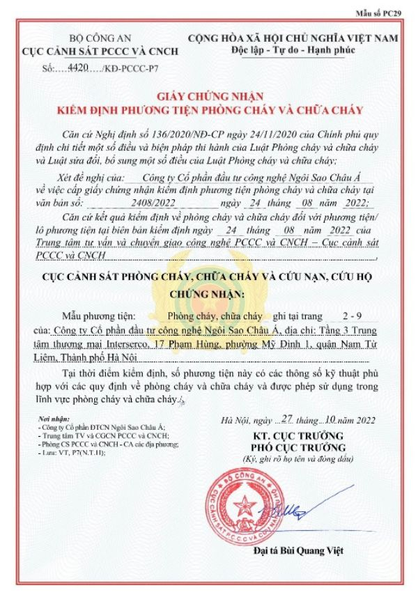

Kiểm tra thông tin quy trình
Mã quy trình:
PL-007
Mã lô:
AH-004
Loại quy trình:
Quy trình sản xuất bưởi theo tiêu chuẩn VietGAP
Mô tả quy trình:
- Chuẩn bị đất trồng: Đất cao đào hố ngang mặt đất và đắp vồng để dễ tưới trong mùa nắng, mùa mưa phá vồng để cây khỏi bị úng nước và bị chảy khi úng.
- Kích thước liếp rộng 5-8m, chiều dài tuỳ theo kích thước vườn nhưng không nên dài quá 30m. Quanh vườn nên đào mương rộng từ 1,5 - 2m, sâu 1-1,2m và đắp bờ cao; mương nội đồng rộng từ 0,5-1m, sâu 0,8-1m. Khi đào mương nên chú ý không nên đem lớp đất phèn (nếu có) lên mặt liếp, nếu đất chua cần bón vôi để nâng pH = 5,5 - 6.
- Nên chú ý đặt cống để điều tiết nước, hàng năm cần sửa sang liếp bằng cách bồi một lớp mỏng bùn và mở rộng mép liếp khi có thể.
- Kích thước hố trồng: Hố trồng bưởi đào theo hình vuông, kích thước 0,6x0,6m. Khoảng cách trồng 5x5m. Trong 3, 4 năm đầu, có thể trồng xen những loại cây ngắn ngày.
- Trồng cây: Nên trồng vào đầu mùa mưa, khi xuống giống nên tỉa bớt lá. Cây giống khi trồng nên đặt thẳng đối với cây tháp hoặc cây chiết có nhánh phân bố đều. Đặt nghiêng đối với cây chiết ít nhánh, giúp các đọt bên mọc lên để tạo tán.
- Bón phân: Cây mới trồng, bón lót 10kg phân chuồng, 0,5kg phân lân, 0,2kg vôi. Lượng phân bón tuỳ thuộc vào tình trạng sinh trưởng của cây.
- Chăm sóc: Làm sạch cỏ, thăm vườn thường xuyên, tỉa bỏ các cành vượt, cành sâu bệnh. Tưới dặm nếu nắng gắt, thoát nước khi bị úng. Tỉa bớt hoa quả vào năm chúng ra quá nhiều, làm cho bưởi kiệt sức. Thu hoạch tập trung và tăng cường phân bón vào những năm được mùa.
- Phòng trừ sâu bệnh: Bệnh thối gốc, chảy mủ, bệnh loét, sâu vẽ bùa, bọ xít xanh hại quả, sâu đục thân cành.
Trạng thái kiểm định:
Chưa kiểm định
Ngày tạo lô:
23/5/2022
Chứng nhận: Tải xuống chứng nhận
